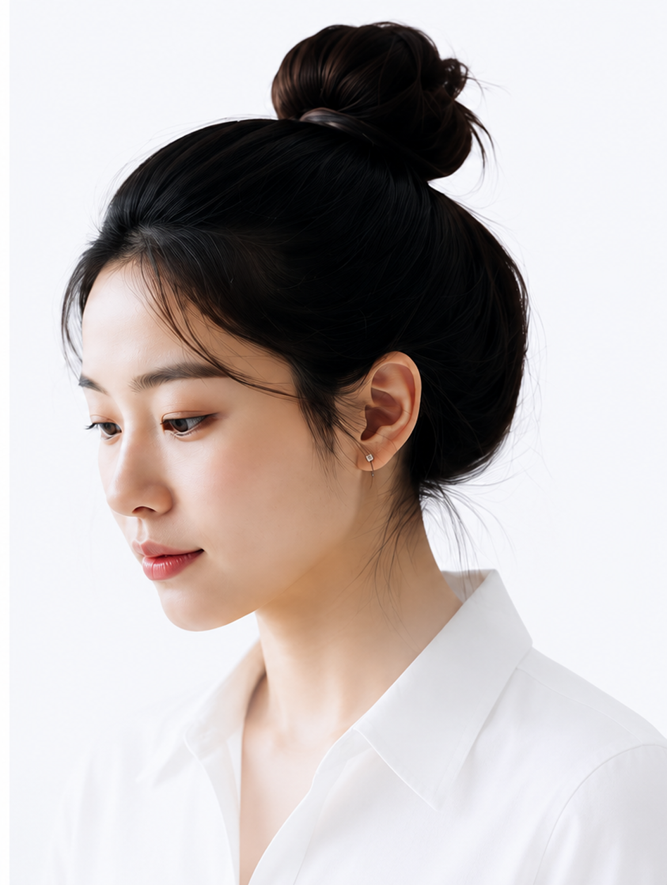

정보 탐색의 어려움
정보가 여러 사이트에 흩어져 있어
필요한 정보를 찾기 위해
여러
사이트를 돌아다녀야 합니다.
DIVE는 문제의 본질을 깊이 파고들어
실질적인 해결책을 설계하고 실행합니다.
DIVE는 UI/UX 디자인과 웹 퍼블리싱을 배우고
실무에 적용하고자 하는 사람들을 위한
정보 탐색 플랫폼입니다.
흩어져 있는 정보를 한 곳에 모아,
누구나 쉽게 탐색하고 필요한 지식을 빠르게 찾을 수 있도록
설계한 정보의 바다입니다.
UI/UX와 웹 퍼블리싱을 학습하고 실무로 적용하는 과정에서
필요한 정보를 찾기 위해 여러 사이트를 반복적으로 탐색해야 했습니다.
정보는 많지만 흩어져 있고, 초심자가 필요한 자료를 찾기에는
시간과 노력이 너무 많이 소요되었습니다.
DIVE는 이런 문제를 해결하기 위해 시작되었습니다.
정보가 여러 사이트에 흩어져 있어
필요한 정보를 찾기 위해
여러
사이트를 돌아다녀야 합니다.
필요한 정보를 찾기까지
탐색 과정이 너무 길어
시간과
노력이 많이 소요됩니다.
어떤 정보가 중요한지 판단하기 어려워
학습과 적용에 혼란이
생깁니다.
디자인, 퍼블리싱, 개발 관련 자료가
분리되어 있어 흐름을
연결하기 힘듭니다.
Drive Into Verified Experiences.
흩어져 있는 정보를 한 곳에 모아
누구나 쉽고 빠르게 탐색하고 활용할 수 있는
UI/UX & 웹 퍼블리싱 정보 탐색 플랫폼
필요한 정보를 모아
깊이 있게 정리합니다.
체계적인 분류로
쉽게 탐색할 수 있습니다.
핵심에 집중하여
정확한 정보를 제공합니다.
지식과 경험이 이어지는
연결의 가치를 만듭니다.
지속적인 학습과 실무에 적용하여
함께 성장합니다.
DIVE는 서로 다른 배경과 목적을 가진 사용자가
쉽고
빠르게 필요한 정보를 탐색하고,
효율적으로 학습할 수 있도록
설계되었습니다.
웹 퍼블리싱을
처음 시작하는데,
체계적으로 배우고 싶어요.
김도현22세대학생
초보 학습자 ・ 체계적 학습 ・ 실습 중심

디자인 트렌드와
실무에 바로 적용할 수 있는
인사이트를 얻고 싶어요.
이지연27세UI/UX 디자이너
실무 디자이너 ・ 트렌드 탐색 ・ 인사이트 확보
필요한 정보를 빠르고 직관적으로 탐색할 수 있도록
사용자 중심의
정보구조(IA)를 설계했습니다.
다양한 디자인 레퍼런스
생산성을 높여주는 AI 도구
디자인 작업에 필요한 요소
다양한 웹 구축 가이드
웹 개발을 위한 라이브러리
퍼블리싱 가이드 & 팁
1 Depth
2 Depth
- 주요 메뉴 기준
DIVE의 핵심 가치를 시각적으로 표현하고,
사용자가 몰입하여
정보를 탐색할 수 있도록
일관된 디자인 시스템을 구축했습니다.
가독성과 가능성을 고려한 Pretendard를 사용하여
정보의
전달력을 높이고 일관된 인상을 제공합니다.
정보를 연결하고, 경험을 확장하다
필요한 정보를 더 쉽게
체계적으로 탐색할 수 있도록
복잡한 정보를 정리하고
실용적인 지식으로 연결합니다.